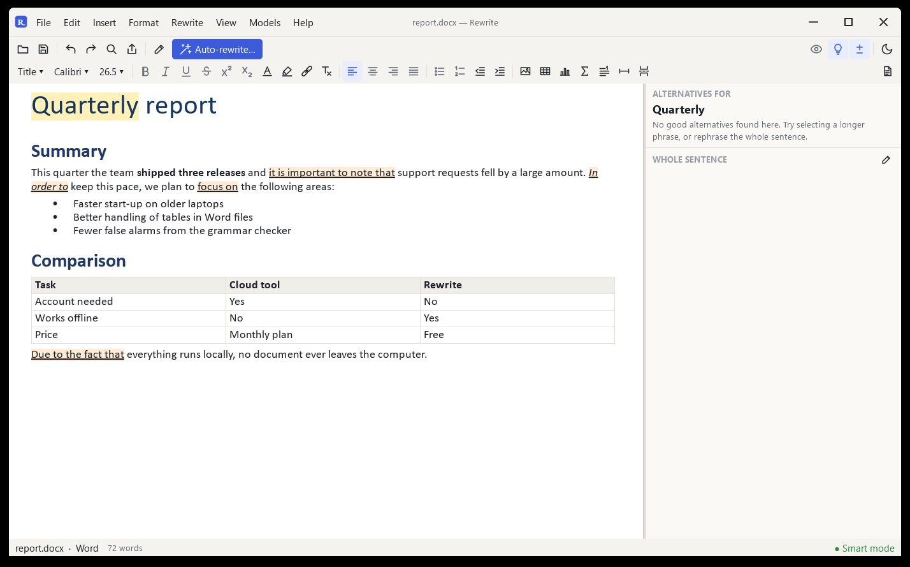

A free Word alternative
for .docx files
Open a .docx, edit it, and save it with its formatting.
Download Rewrite
Free, no account

What you get
- .docx, .doc, .odt and .rtf
- Styles, lists, footnotes and links, with a formatting toolbar
- Tables, pictures, charts and formulas
- Rewrite and fix grammar in the same window
- Save as PDF, HTML, Markdown or LaTeX
- Free, no subscription
What it doesn't do
- Track changes and comments
- Mail merge
- Live co-editing
- Saving .doc without LibreOffice installed
FAQ
Will my formatting survive?
Styles, tables, pictures and footnotes open and save with the file.
Can I open old .doc files?
Yes. Saving as .doc needs LibreOffice.
Is it free?
Yes. No trial, no account.
Also an alternative to QuillBot Grammarly Overleaf Adobe Acrobat.